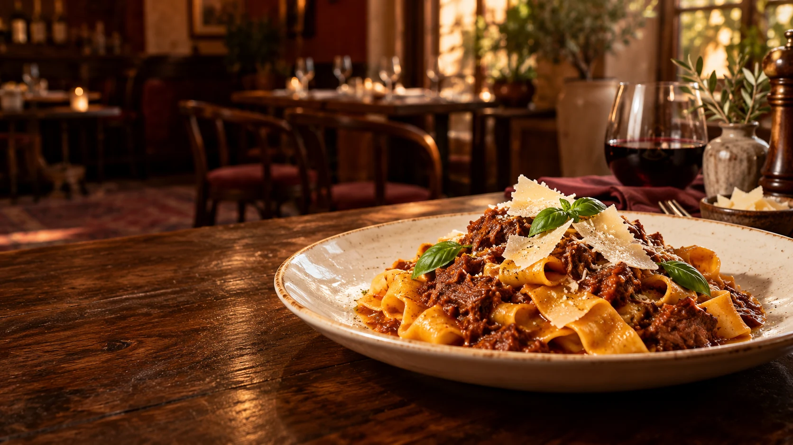
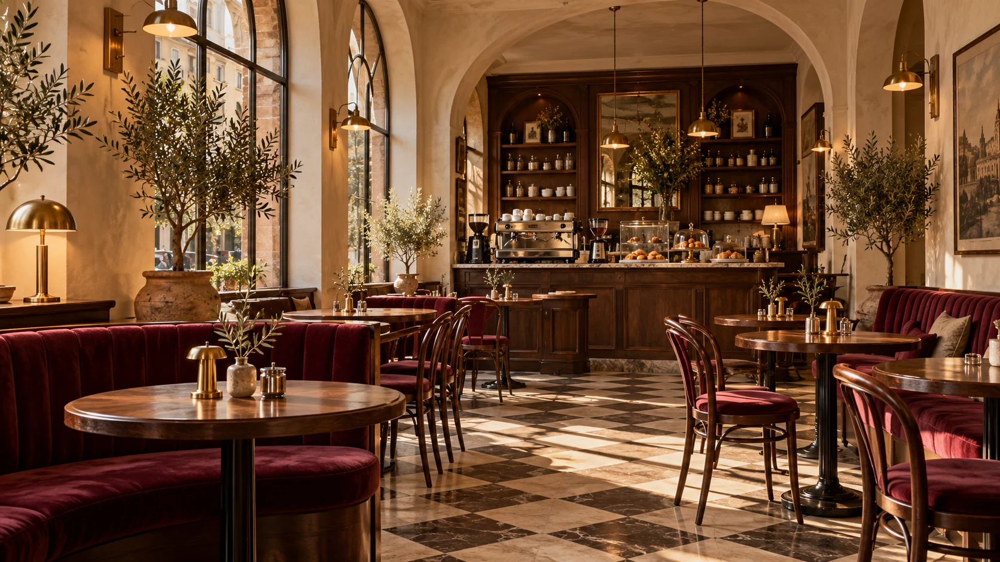
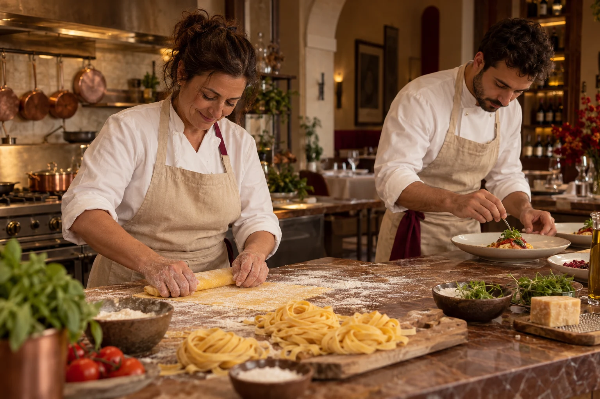
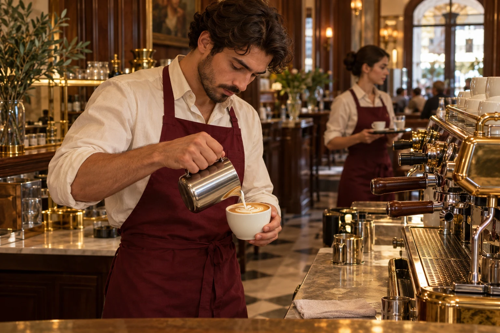

IN THE KITCHEN
Fresh pasta. Every morning.
A rhythm of rolling, tasting and sharing. Our kitchen is where simple ingredients become something worth slowing down for.

UN PO’ D’ITALIA, EVERY DAY.
Handmade pasta. Beautiful coffee.
And a little more time at the table.
The first sip of a proper espresso. Pasta made by hand. A conversation that outlasts dessert. At Casa Lenta, we find a little everyday joy in doing simple things beautifully.
A place to linger ↗THE ONES YOU’LL COME BACK FOR
Illustrative ratings and fictional guest reviews for this café concept.

Sunlight through the arches. The scent of fresh coffee. Your favourite corner, waiting. Inspired by the neighbourhood cafés of Italy, our casa is a place for unhurried mornings and evenings that become memories.

FATTO CON AMORE · MADE WITH LOVE
Rolled by hand. Cooked with care. From the first dough of the morning to the last plate of the evening, it’s the little things that make it ours.
Meet the hands behind it ↗THE SOUL OF THE CASA
Behind every plate and every perfect pour, people who care about making your day a little better.
IN THE KITCHEN
A rhythm of rolling, tasting and sharing. Our kitchen is where simple ingredients become something worth slowing down for.

BEHIND THE BAR
The familiar sound of the grinder. A careful pour. A cup made just for you, from the first buongiorno to the afternoon pause.
THERE’S A PLACE FOR YOU HERE
A quiet date, a catch-up, or just because.
Let’s make a little time for something lovely.
Every day · 8:00–22:00
Kitchen · 11:00–21:00